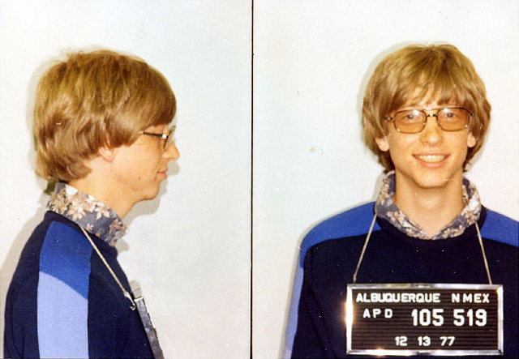

Bill Gates is een Amerikaanse ondernemer (hij is de op een na rijkste man ter wereld). Hij is vooral bekend geworden door Microsoft, omdat hij de mede oprichter is. Bill Gates heeft twee zussen. hij is door zijn ouders naar het Lakeside Prep School in Seattle gestuurd. Hij werd bevriend met Paul Allen die later zijn zakenpartner werd, ze hackten samen het systeem dat de hoeveelheid verbruikte computertijd bijhield. Op 22 juli 1975 sloot MITS een overeenkomst met Gates en Allen om de rechten van hun BASIC-interpreter te kopen. Dat was het begin van Microsoft. Bill Gates is getrouwd met Melinda French en hij heeft 3 kinderen. Bill Gates is in 1977 aangehouden, omdat hij een verkeersovertreding had gemaakt.
